数据开发环境搭建
学习目标
- 能够 独立完成 Anaconda 开发环境搭建
- 掌握 Anaconda 的使用方法
- 掌握 Jupyter Notebook 的基本使用
1. 开发环境搭建
1.1 简介
Anaconda 是最流行的数据分析平台，全球两千多万人在使用
Anaconda 附带了一大批常用数据科学包
1）conda
2）Python
3）集成150 多个科学包及其依赖项（默认的base环境）
Anaconda 是在 conda（一个包管理器和环境管理器）上发展出来的
1）conda可以帮助你在计算机上安装和管理数据分析相关包
2）Anaconda的仓库中包含了7000多个数据科学相关的开元库
Anaconda 包含了虚拟环境管理工具
通过虚拟环境可以使不同的 Python 或者开源库的版本同时存在
Anaconda 可用于多个平台（ Windows、Mac OS X 和 Linux）
我们平时使用 Anaconda 自带的 jupyter notebook 来进行开发，Anaconda 是工具管理器，jupyter notebook是代码编辑器（类似于PyCharm，但jupyter notebook是基于html网页运行的）
1.2 安装
- 可以在官网上下载对应平台的安装包
- 本课程中使用的版本为：Anaconda Navigator 1.10.0
- 如果计算机上已经安装了 Python，安装不会对你有任何影响
- 安装的过程很简单，一路下一步即可；这里以win10系统作为下载安装演示仅供大家参考
1）访问 https://www.anaconda.com/products/individual ，如下图所示点击下载：
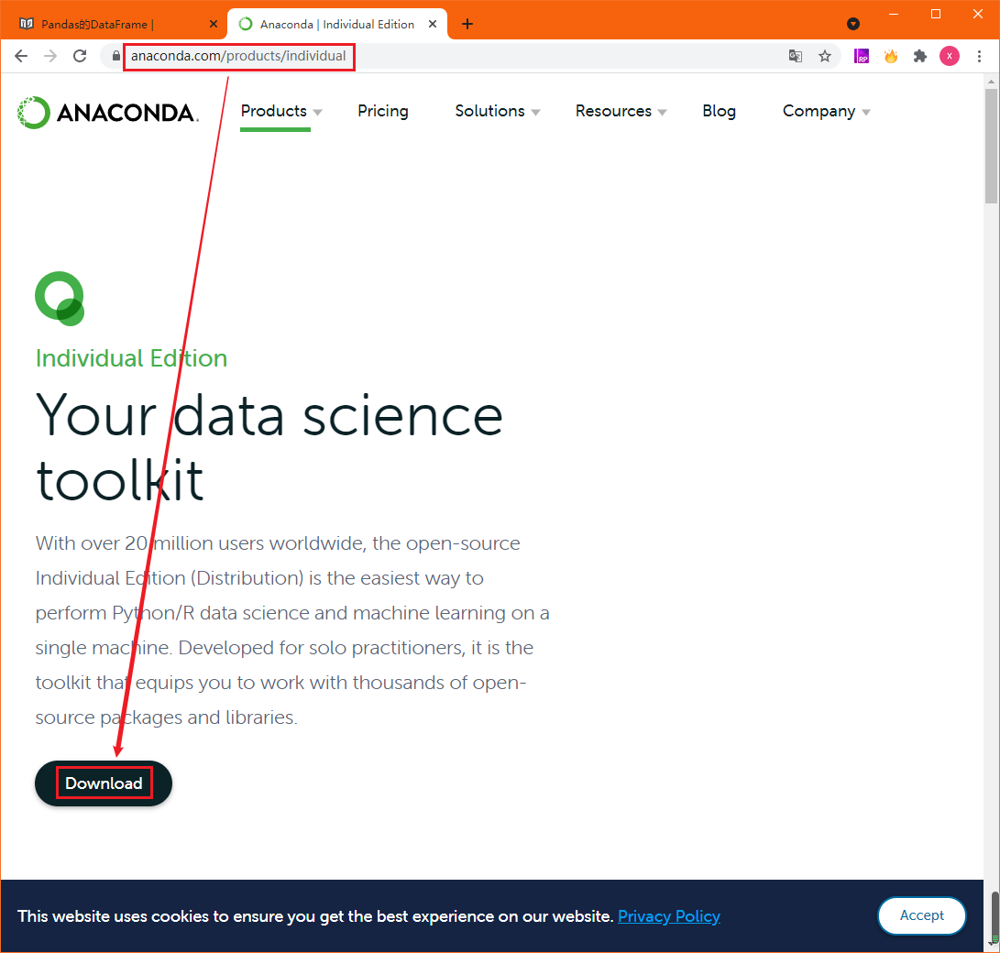
2）根据你的操作系统来选择相应的版本下载
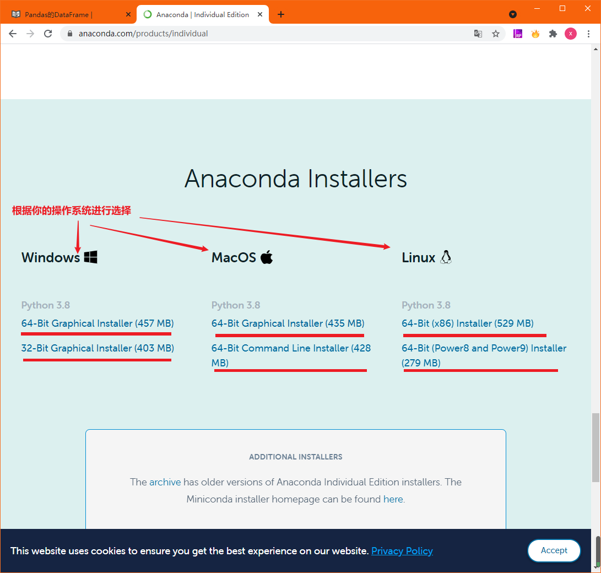
3）点击安装
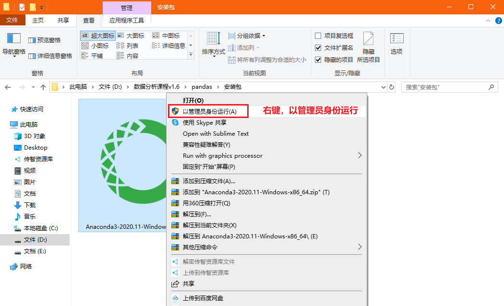
4）选择操作系统中的用户

5）选择安装路径

6）建议都勾选，自动添加环境变量，自动安装python
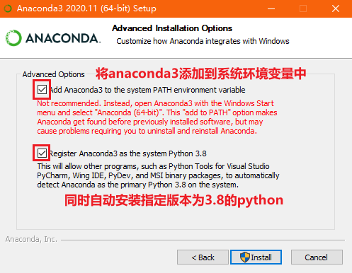
7）等待安装
8）安装完毕
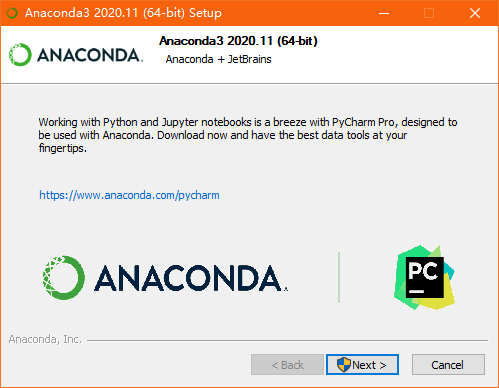
9）勾选使用个人版
10）安装好之后部分版本不会在你的桌面创建快捷方式，但是在开始菜单的最近添加中我们可以看到安装好的anaconda3 图标，点击就可以打开 anaconda 了
1.3 Anaconda的界面
1）安装好 Anaconda 后点击图标，可以打开 Anaconda 的管理面板
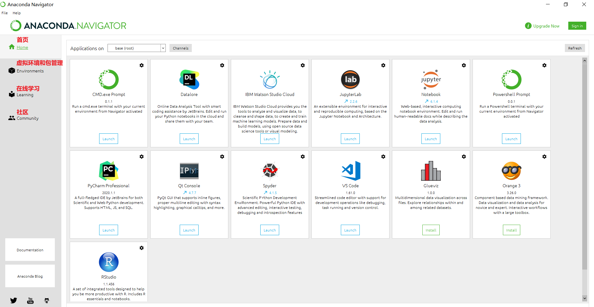
2. Anaconda的使用
2.1 Anaconda的虚拟环境管理
2.1.1 什么是虚拟环境？
不同的python项目，可能使用了各自不同的python的包、模块；
不同的python项目，可能使用了相同的python的包、模块，但版本不同；
不同的python项目，甚至使用的Python的版本都是不同；
为了让避免项目所使用的Python及包模块版本冲突，所以需要代码运行的依赖环境彼此分开，业内有各种各样的成熟解决方案，但原理都是一样的：不同项目代码的运行，使用保存在不同路径下的python和各自的包模块；不同位置的python解释器和包模块就称之为虚拟环境。
具体关系图如下：
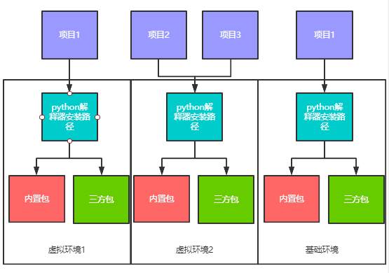
虚拟环境的本质，就是在你电脑里安装了多个Python解释器（可执行程序），每个Python解释器又关联了很多个包、模块；项目代码在运行时，是使用特定路径下的那个Python解释器来执行
虚拟环境的作用：
- 很多开源库版本升级后API有变化，老版本的代码不能在新版本中运行
- 将不同 Python 版本/相同开源库的不同版本隔离
- 不同版本的代码使用不同的虚拟环境运行
2.1.2 Anaconda 添加国内镜像源
通过 Anaconda 创建虚拟环境和安装python扩展包时，需要下载 python 解释器和扩展包，默认是从国外镜像源下载的，此处将其设置为国内的清华镜像下载源。
1）打开自己电脑的 cmd 终端，再终端执行如下命令即可：
# Anaconda 添加国内清华镜像源
conda config --add channels https://mirrors.tuna.tsinghua.edu.cn/anaconda/pkgs/free/
# 让配置马上生效
conda config --set show_channel_urls yes
2.1.3 通过Anaconda界面创建虚拟环境
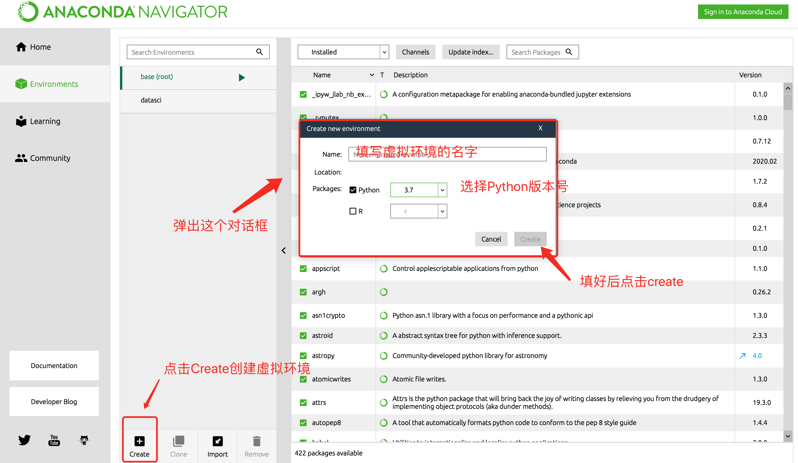
2.1.4 通过命令行创建虚拟环境
1）打开自己电脑的cmd命令行终端
2）命令行终端对虚拟环境的操作命令如下：
conda create -n 虚拟环境名字 python=3.8 # 创建虚拟环境 python=3.8 指定python版本
conda activate 虚拟环境名字 # 进入虚拟环境
conda deactivate # 退出当前虚拟环境
conda remove -n 虚拟环境名字 --all # 删除虚拟环境
# 示例：
# 1）创建一个名为 datasci 的 python3.8 虚拟环境
conda create -n datasci python=3.8
# 2）切换到 datasci python虚拟环境中
conda activate datasci
# 3）退出当前所在 python虚拟环境
conda deactivate
2.2 Anaconda的包管理功能
2.2.1 通过Anaconda管理界面安装包
1）点击Environment选项卡，进入到环境管理界面，通过当前管理界面安装python的包模块
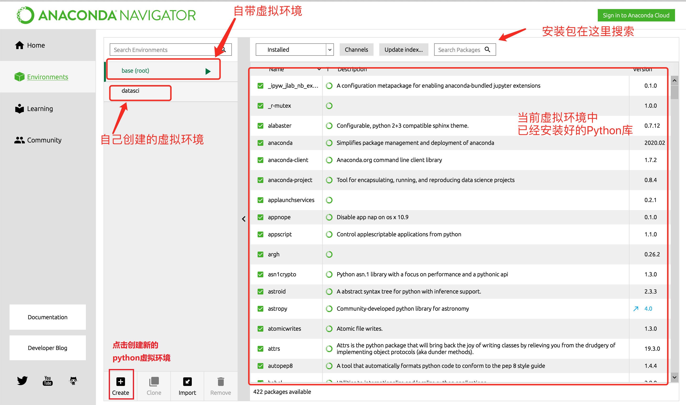
2.2.2 通过Anaconda提供的CMD终端工具进行python包的安装
1）打开自己电脑的cmd命令行终端
注意：安装包之前，首先一定要先切换到自己的 Python 虚拟环境！！！
# 切换到自己的虚拟环境
conda activate datasci
2）可以通过conda install 安装【不推荐】
conda install 包名字
3）但更推荐使用pip命令来安装python的第三方包【推荐】
pip install 包名字
4）安装其他包速度慢可以指定国内镜像
# 阿里云：https://mirrors.aliyun.com/pypi/simple/
# 豆瓣：https://pypi.douban.com/simple/
# 清华大学：https://pypi.tuna.tsinghua.edu.cn/simple/
# 中国科学技术大学 http://pypi.mirrors.ustc.edu.cn/simple/
pip install 包名 -i https://pypi.tuna.tsinghua.edu.cn/simple/ # 通过清华大学镜像安装
5）pandas 是一个第三方的扩展包，需要安装
# 安装 Pandas 扩展包
pip install pandas==1.1.1 -i https://pypi.tuna.tsinghua.edu.cn/simple/
3. Jupyter Notebook的使用
3.1 安装 Jupyter Notebook
1）通过 Anaconda 界面，选择自己的虚拟环境，并安装 jupyter notebook
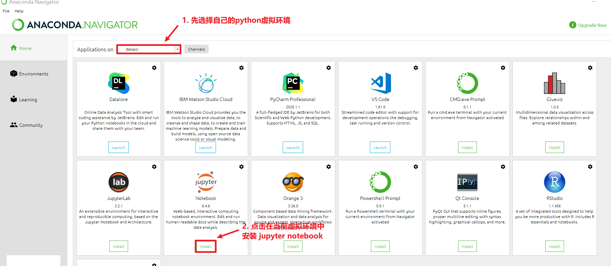
3.2 启动 Jupyter Notebook
3.2.1 可以通过Anaconda启动 Jupyter Notebook

3.2.2 推荐通过终端启动 Jupyter Notebook
注意：这种方式先启动cmd，通过切换虚拟环境和磁盘位置，再启动Jupyter notebook
1）在启动Anaconda提供的CMD后，输入命令如下：
# 可选操作，切换虚拟环境，使用不同的python解释器和包
conda activate 虚拟环境名字
# 切换磁盘位置，可选操作
D:
cd code # code目录需要自己在D盘下创建
# 启动jupyter notebook
jupyter notebook
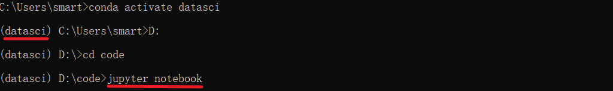
2）此时浏览器会自动打开jupyter notebook
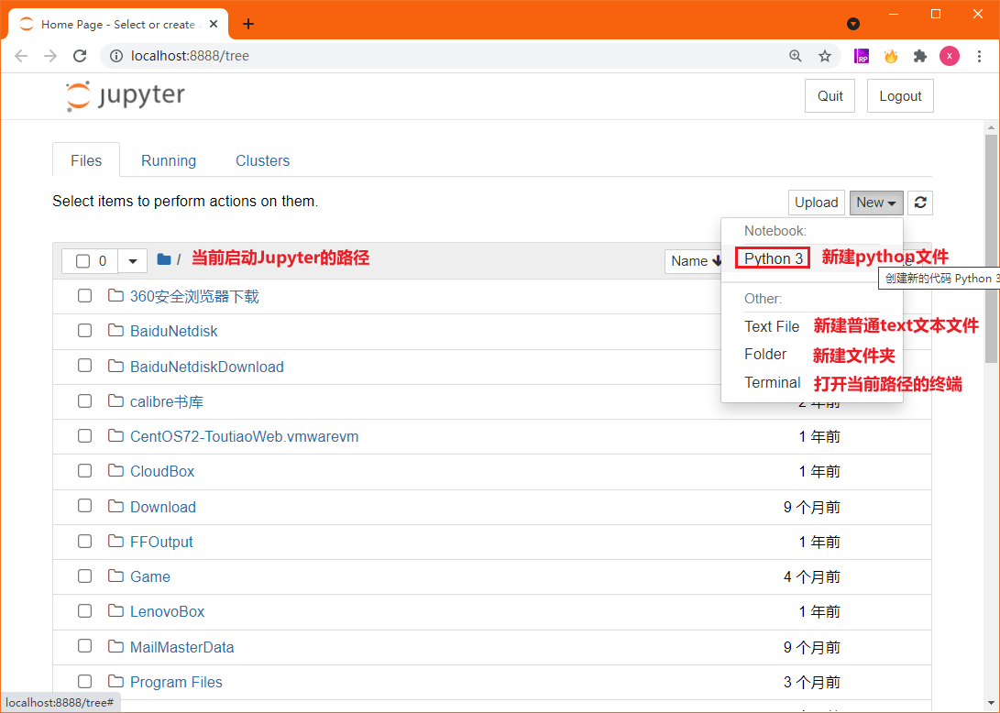
3.3 Jupyter Notebook的使用
3.3.1 Jupyter notebook的功能扩展
1）在启动Anaconda提供的CMD后，安装jupyter_contrib_nbextensions库，在CMD中输入下列命令
# 进入到虚拟环境中
conda activate 虚拟环境名字
# 安装 jupyter_contrib_nbextensions
pip install jupyter_contrib_nbextensions -i https://pypi.tuna.tsinghua.edu.cn/simple/
# jupyter notebook安装插件
jupyter contrib nbextension install --user --skip-running-check
# 安装 pep8 扩展包
pip install autopep8==1.5.7 -i https://pypi.tuna.tsinghua.edu.cn/simple/
2）安装结束后启动jupyter notebook

3）配置扩展功能，在原来的基础上勾选： "Table of Contents" 以及 "Hinterland"
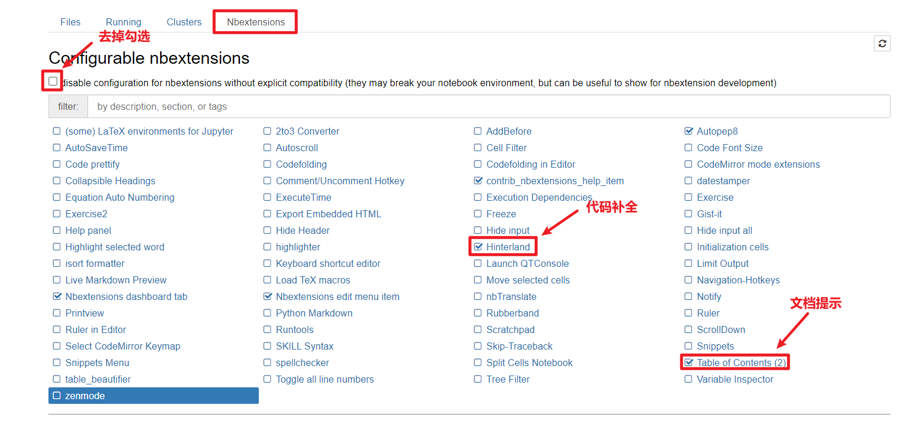
3.3.2 Jupyter Notebook的界面
1）新建notebook文档
注意：Jupyter Notebook 文档的扩展名为
.ipynb，与我们正常熟知的.py后缀不同
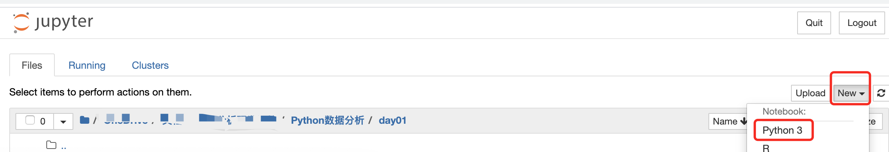
2）新建文件之后会打开Notebook界面
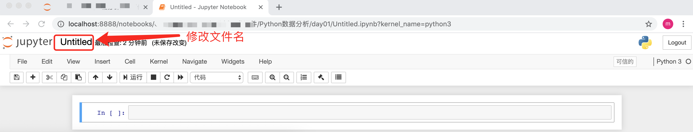
3）菜单栏中相关按钮功能介绍
注意：Jupyter Notebook的代码的输入框和输出显示的结果都称之为cell，cell行号前的 * ，表示代码正在运行
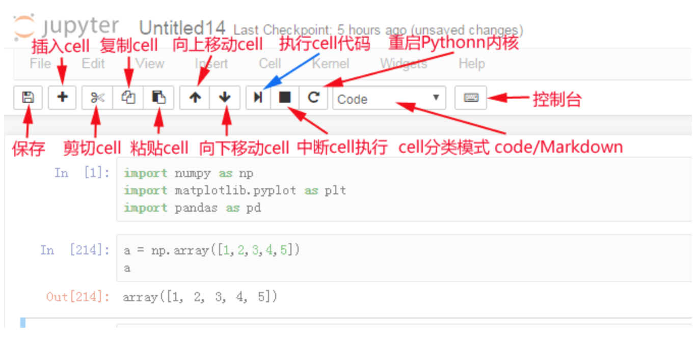
3.3.3 Jupyter Notebook常用快捷键
Jupyter Notebook中分为两种模式：命令模式和编辑模式.
1）两种模式通用快捷键：
- Shift+Enter：执行本单元代码，并跳转到下一单元
- Ctrl+Enter：执行本单元代码，留在本单元
2）命令模式：编辑模式下按ESC进入即可进入命令模式
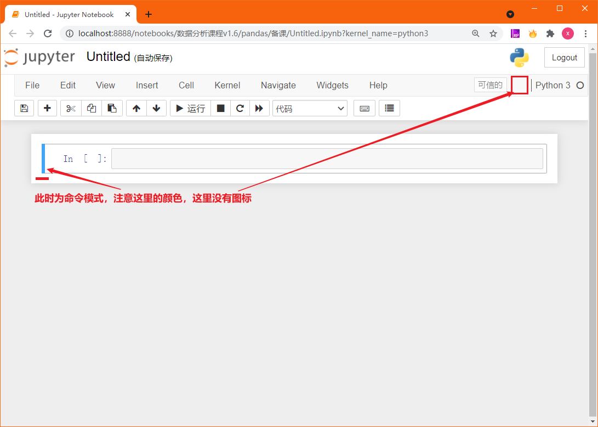
Y：cell切换到Code模式
M：cell切换到Markdown模式
A：在当前cell的上面添加cell
B：在当前cell的下面添加cell
双击D：删除当前cell
3）编辑模式：命令模式下按Enter进入，或鼠标点击代码编辑框体的输入区域

多光标操作：
Ctrl键点击鼠标（Mac:CMD+点击鼠标）回退：
Ctrl+Z（Mac:CMD+Z）重做：
Ctrl+Y（Mac:CMD+Y)补全代码：变量、方法后跟
Tab键为一行或多行代码添加/取消注释：
Ctrl+/（Mac:CMD+/）
3.4 Jupyter Notebook中使用Markdown
注意：在命令模式中，按M即可进入到Markdown编辑模式，使用Markdown语法可以在代码间穿插格式化的文本作为说明文字或笔记。
1）Markdown基本语法：标题和缩进
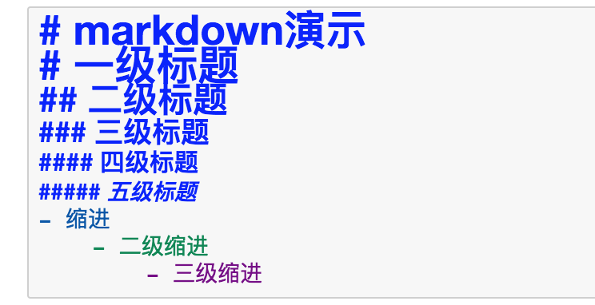
2）效果如下图显示
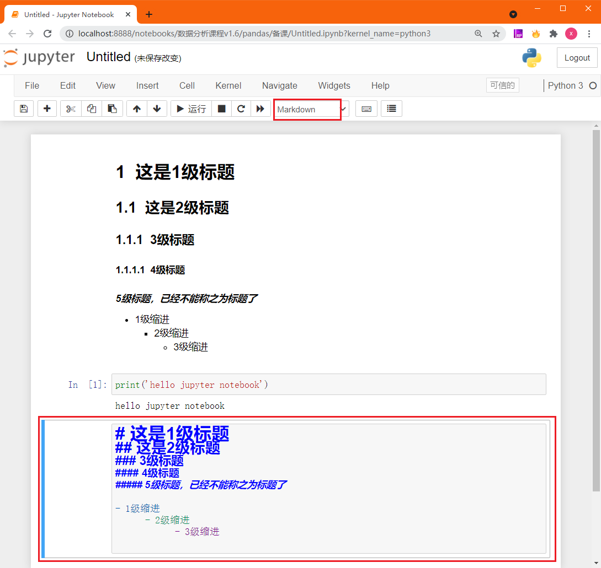
小结
- 独立完成 Anaconda 开发环境搭建
- 安装Anaconda作为开发环境的管理器
- 掌握 Anaconda 的使用方法
- Anaconda可以管理虚拟环境
- Anaconda可以管理虚拟环境中的软件包
- 掌握 Jupyter Notebook 的使用方法
- 文件扩展名为.ipynb
- 在cell中编辑代码和展示输出结果
- 支持Markdown语法